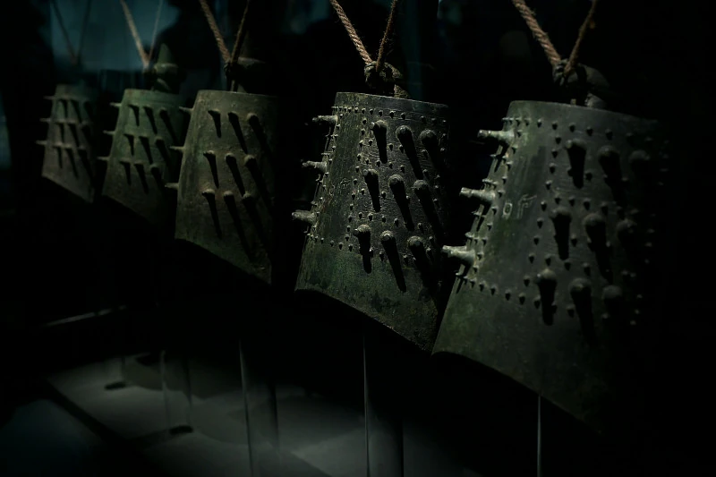

法门寺 · 真身宝塔法门镇
N.01法门镇
法门寺Famen Temple
始建于东汉末年，号称「关中塔庙始祖」。1987 年清理塔基时发现唐代地宫， 出土佛指舍利和 2499 件大唐珍宝。今天看真身宝塔、地宫、合十舍利塔， 再沿着 1230 米佛光大道走一遍。
1987 地宫开启2499 件唐宝佛指舍利
故土 / The place I call home
渭水之滨，西府之地。
一座小县城，三千多年的故事都在脚下。
扶风县位于陕西省西部、宝鸡市东北部。北依乔山，南临渭水，地处关中平原的西缘。 这里是八百里秦川的一部分——土地平坦，河流纵横，是周秦文明的摇篮。
扶风之名始于汉代，取「扶助京师，以行风化」之意。 向东百余公里是西安，向西翻过秦岭可达甘肃；古丝绸之路从这里经过，周人也最早在这一带聚居。
看历史 →
我在扶风长大。
法门寺的钟声曾是午后最清晰的回响，
渭水的岸，是周末漫步的方向；
西府的秦腔，是爷爷收音机里永远在放的调子。
先说清楚：扶风不是值得专程来一趟的地方，没有要排队的店，也没有必须打卡的机位。 下面这些，是我自己会去、也会吃的东西。每一条都配了实地影像，点击可看大图——要是哪天碰巧路过，就当我带你看一圈。
法门寺 · 真身宝塔法门镇
始建于东汉末年，号称「关中塔庙始祖」。1987 年清理塔基时发现唐代地宫， 出土佛指舍利和 2499 件大唐珍宝。今天看真身宝塔、地宫、合十舍利塔， 再沿着 1230 米佛光大道走一遍。

周原遗址 · 召陈建筑基址召陈村
周原遗址的核心区就在县城北边这一带。周人灭商前的都邑在此， 凤雏甲组建筑基址出土过西周甲骨。《诗经》里那句 「周原朊朊，堇荼如饴」，说的就是这片地的肥。 周原博物院就在召陈村。

庄白青铜器窖藏 · 史墙盘出土地青铜器之乡
1976 年 12 月，庄白一号窖藏一次出土 103 件西周青铜器， 其中的墙盘内底有 284 字铭文，被叫作「青铜史书」； 1890 年任家村出土的大克鼎，也是从这里走的。 原件大多收在宝鸡，来处还在这里。

七星河 · 傍晚河湾城关街道
七星河国家湿地公园：全长 39 公里，北起法门镇马家村，南到杏林镇浪店村， 2018 年正式挂牌。傍晚最好看，荷塘、廊桥、芦苇都在。 野河山：乔山南麓，18 万亩槐树林， 五月槐花最盛，山里有贵妃故里和人民公社旧址。

绛帐古镇 · 马融传经处绛帐镇
东汉马融在这里设绛色纱帐讲学，弟子众多，郑玄、卢植都出自门下， 「绛帐授徒」后来成了师长讲学的代称。1936 年陇海铁路在此设站， 2022 年起又有动车停靠——一个镇，装着半部关中文教和铁路史。

西府秦腔 · 庙会大戏法门镇
关中人叫秦腔，西府人叫「大戏」。过事、赶会、庙会，台子一搭，板胡一响， 半个村子都来了。唱的是老调，吼的是气性；听不懂词也没关系， 那股劲先到，人就站住了。

一口香臊子面 · 扶风吃食县城
扶风臊子面讲究「一口香」：小碗、酸汤、面少汤多， 一口一碗，一顿能连吃十几碗；还有擀面皮、醋糟粉、甑糕、油糕。 特产鹿糕馍（也常写作「鹿羔馍」），唐代就有记载， 直径约 10 厘米，香酥耐存，走亲戚常拿它；扶风人出门，包里也常塞两个。

扶风县博物馆 · 城隍庙旧址城关街道
馆藏以周原出土的青铜器、陶器、瓦当为主。 很多在别处听过的地名和器物，到这儿才对得上号。
西府的风
吹过三千年前的麦穗，
也吹过少年放学的那条路。
在外面待久了，想起的不是景点，是那碗面。
总有一天要回去，坐下来，
吃一碗热的。